本文尝试归纳整理作者所了解的IO基础模式、IO架构通用模式，尽可能一篇文章提供IO相关的全景图以及方案优化对比。
本文使用黑夜模式阅读体验更佳。
如无特殊说明，本文使用的术语遵从Linux、Java的习惯。
IO基础概念
Buffer
Buffer 是字节流在内存中的表示，是一种数据结构。
针对读写模式的不同，Java中使用同样的字段不同的使用方式。如图：
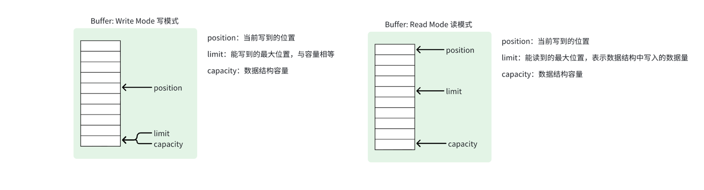
Channel
Channel 则是负责读写IO动作的组件，对接OS层面的文件、网络模块，数据读写到内存中则用Buffer表示。
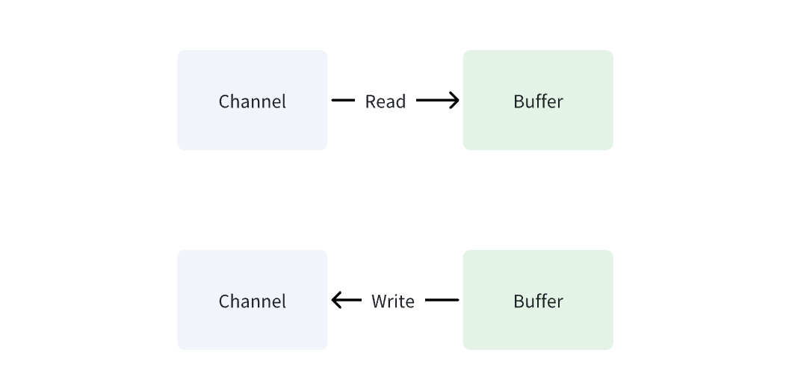
Scattering Read & Gathering Write
分散读：一次读调用，从多个IO源中获取数据。
聚集写：一次写调用，完成多个IO目的地的写入。
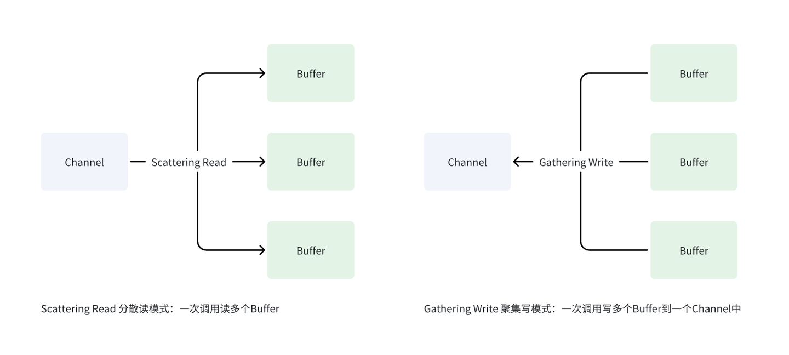
Selector
Selector组件是IO多路复用算法的核心组件，单线程（或多线程）单个Selector组件即可完成多个IO数据就绪的监听。
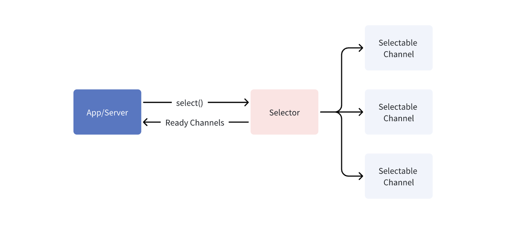
Pipe
Pipe表示两个Channel间的单向连接。
IO基础模式
介绍模式之前，强调一些基础背景：
- 我们的服务端程序属于用户态；
- 操作系统属于内核态；
- 当程序向操作系统发起
IO时，操作系统会经历以下阶段：- 数据准备；
- 从物理设备，通过
DMA，复制到内核缓冲区（Kernel Buffer）；
- 从物理设备，通过
- 数据就绪；
- 数据复制（从内核空间复制到用户空间）；
- 从内核缓冲区，通过
CPU，复制到用户空间缓冲区；
- 从内核缓冲区，通过
- 数据准备；
数据准备与复制两个阶段的核心作用如图： 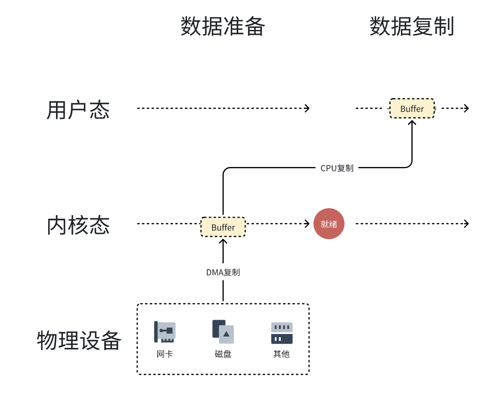
IO的基础模式解决的是统一抽象了单个IO的流程模式，基础模式是高级模式的基础。
同步阻塞IO
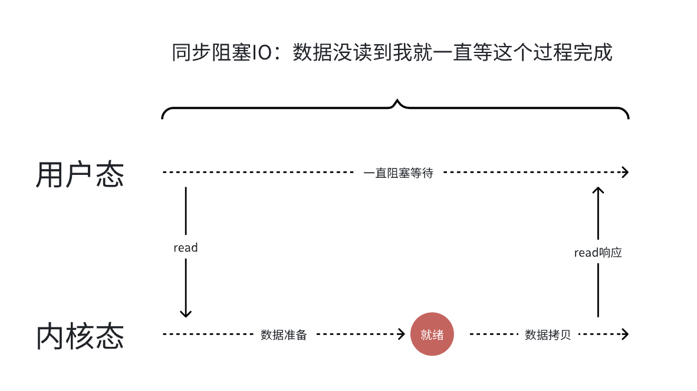
对于同步阻塞IO来说，从应用程序发起IO调用（图中的read()）后会一直等待，直到操作系统完成数据准备、就绪、复制等动作。
同步非阻塞IO
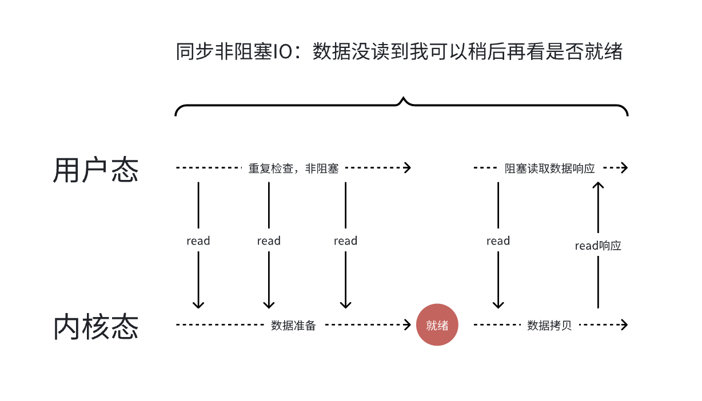
对于同步非阻塞IO来说，从应用程序发起IO调用（图中的read()）后，如果此时数据还未就绪，则该干啥干啥去，稍后片刻后再发起read()调用检查数据是否就绪。
当数据就绪后，应用程序发起的read()会阻塞获取到结果。
同步非阻塞模式解决了同步阻塞模式下的一直阻塞等待数据准备结果的效率问题。
异步IO
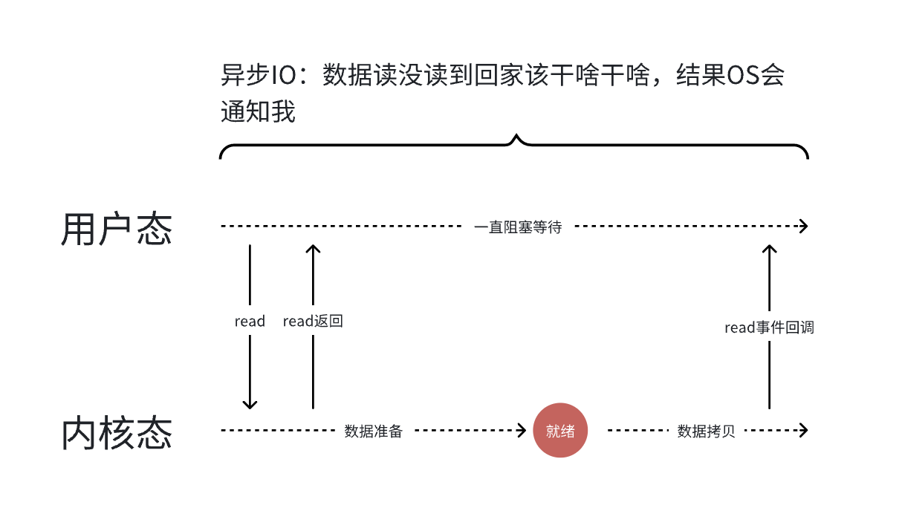
对于异步IO来说，应用程序发起read()后即时返回，后续数据就绪后，由操作系统通知应用程序结果。
异步模式提高了同步非阻塞模式下需要多次检查数据准备结果的效率。
IO多路复用
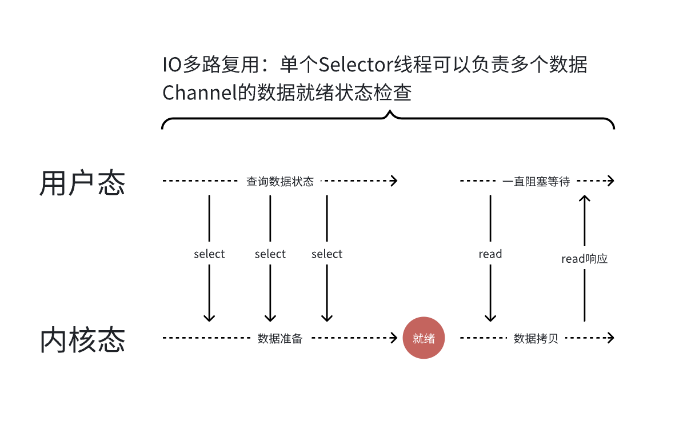
对于IO多路复用模式，使用一个Selector组件统一接管了多个IO请求的数据准备状态的检查工作。
IO多路复用技术关键点：
- 多条连接共用一个阻塞对象，无需轮询所有连接对象，常见实现方案有
select、epoll、kqueue； - 当某条连接有数据响应时，OS通知进程，进而做业务处理；
IO高性能模式
理解掌握了IO的基础模式，我们基本可以解决单个IO、简单场景IO的问题。
但面对工业系统面临的问题时，比如系统承载连接变多、用户并发请求数升高、资源利用率，我们需要做更多的设计，因此需要基于基础模式进行高性能模式的探索。
PPC: Process Per Connection
一个连接启动一个进程处理，是传统UNIX网络服务器最初始的模式。
特点：
- fork开销大；
- 跨进程通信复杂；
- 支持的并发连接数有限；
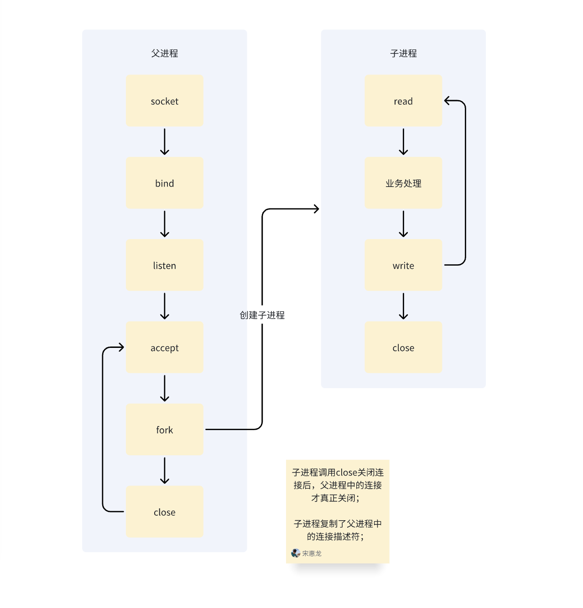
PPC: prefork
优化1：prefork 进程预热
系统启动时预先创建好子进程。
特点：
- 通过提前创建子进程优化了原PPC模式下fork开销大的问题；
- 其他问题依然存在；
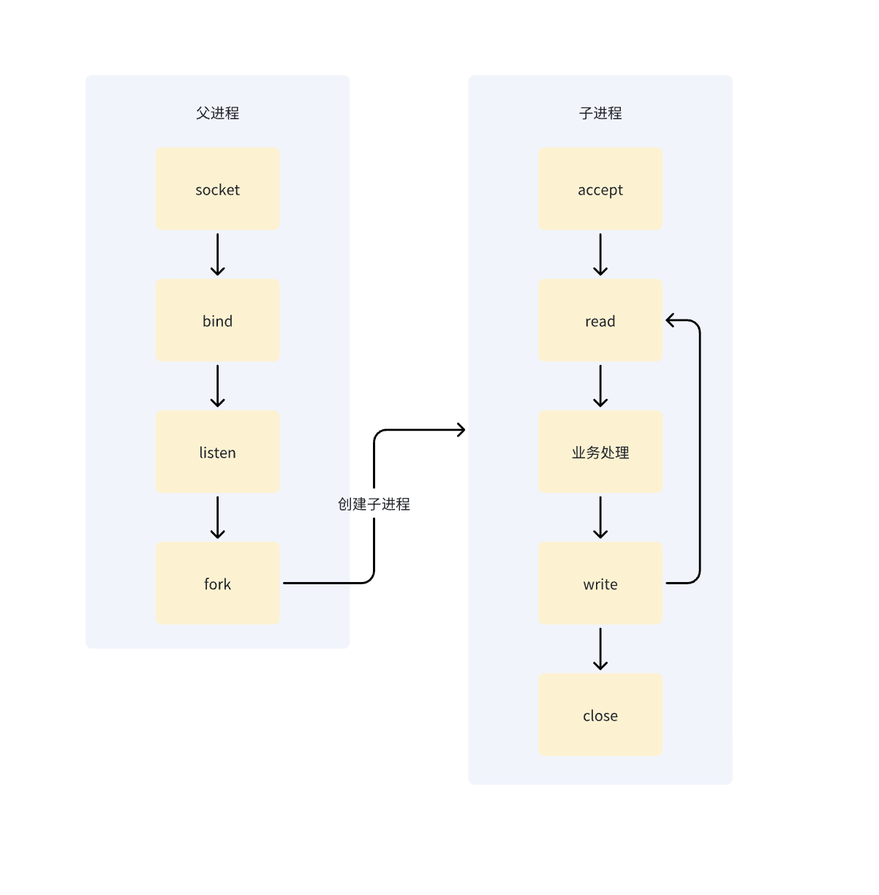
TPC: Thread Per Connection
一个连接启动一个线程处理。
特点：
- 解决了PPC fork开销大的问题，线程创建开销更小；
- 但是创建线程的开销依然很大；
- 解决了跨进程通信复杂的问题，多线程共享了进程内存空间，通信效率较高；
- 但是线程通信也需要同步，引入了死锁的问题；
- 多线程间可能会互相影响，比如某个线程出现内存越界时，会导致整个进程退出；
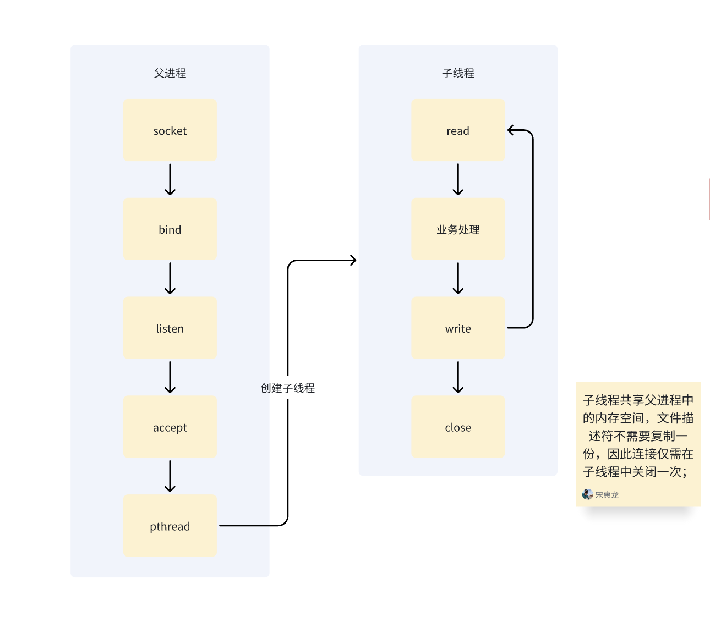
TPC: prethread
优化1：prethread 线程预热
预先创建线程。
特点：
- 相比PPC的prefork更加灵活；
- 案例：Apache的MPM Worker，多进程+多线程模式，默认支持了 16*25=400 个并发处理线程；
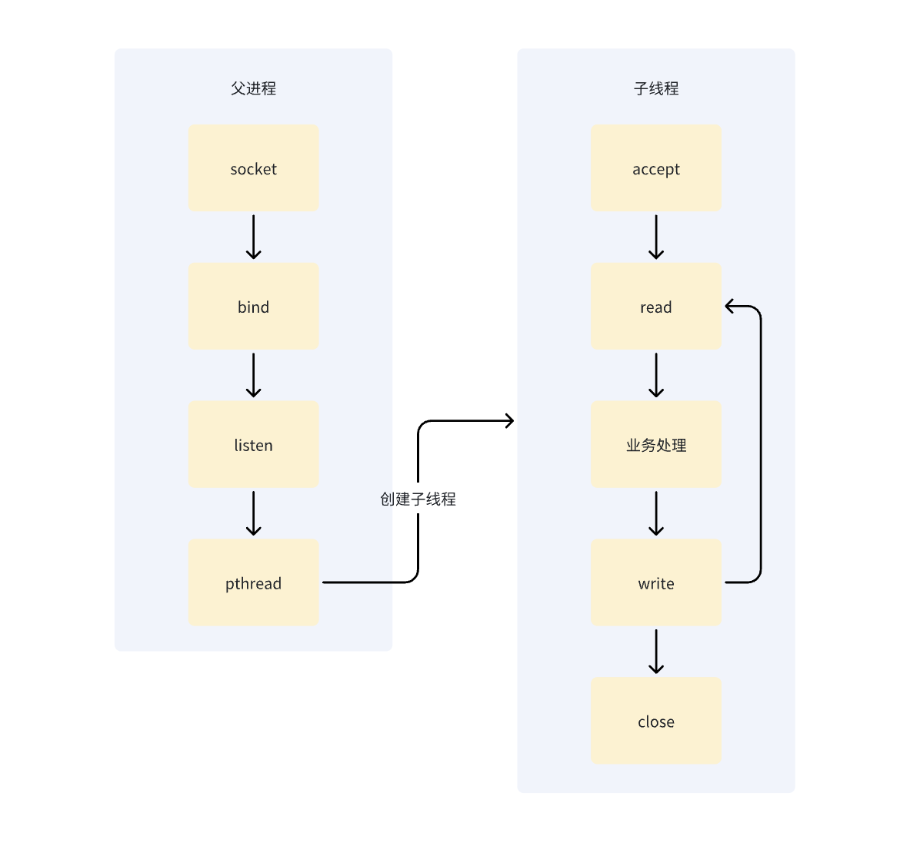
PPC、TPC的局限性分析
实现简单，但是无法支持高并发场景。
问题分析：
- 进程、线程在不使用的情况下就要销毁，可以考虑使用池化的方式进行资源复用；
- 单进程处理多个连接，如果多个连接都进行阻塞监听，则有后续连接因前序连接阻塞无法处理的问题，可以考虑使用非阻塞轮询的方式改进，如果连接过多，则轮询的开销也会加大，进一步，可以考虑使用IO多路复用进行改进；
改进方案：
根据以上方面的分析，方案无非是如下三种：
- 连接资源池化；
- 非阻塞IO；
- IO多路复用；
相比PPC、TPC，下方的Reactor、Proactor模式更擅长应对高并发。
Reactor模式
由上部分的PPC、TPC的局限性分析我们已经得出了改进的方案，而 IO多路复用 + 线程池 = Reactor模式（等同于Dispatcher）。
Reactor架构模式是主流中间件使用的方案！
Reactor我们可以细分为三种模式：
- 单Reactor单进程、线程；
- 单Reactor多线程；
- 多Reactor多进程、线程；
我们选取其中常用的方案进行优缺点、结构分析。
单Reactor单进程、线程
优点：
- 实现简单；
- 没有跨进程通信；
- 没有跨进程资源竞争；
缺点：
- 无法利用多核CPU的优势；
- Handler只有一个进程（线程），当前序任务处理过久时，handler会成为后续任务的瓶颈；
适用场景：业务场景处理快速的场景。
使用案例：Redis。
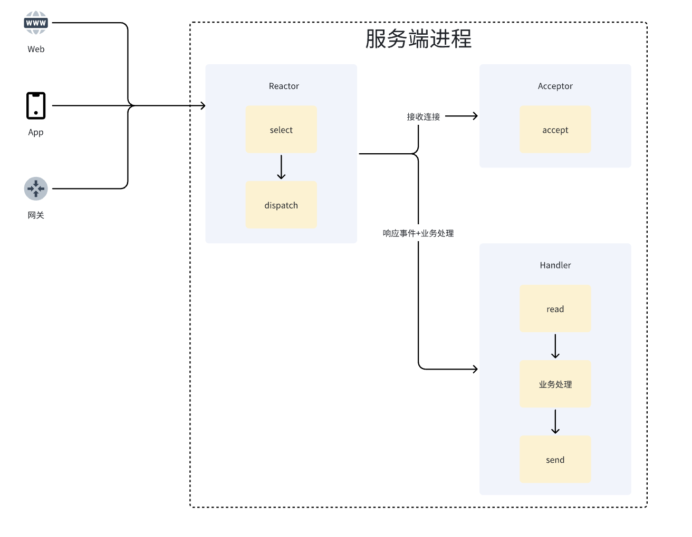
单Reactor多线程
优点：
- 可充分利用多核CPU的优势；
缺点：
- 多线程数据同步较复杂；
- 单个Reactor负责所有请求的处理，可能成为瓶颈；
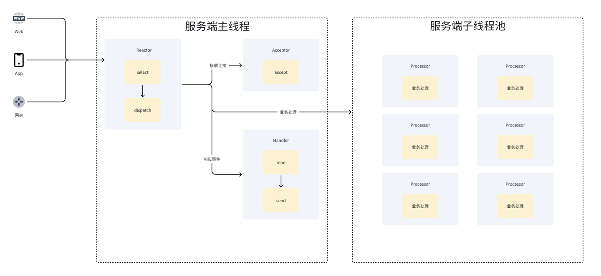
Proactor
IO操作+业务操作完全异步化 = Proactor模式。
优点：
- 全链路异步化，更高效；
缺点：
- 实现复杂；
- 目前仅
Windows系统通过IOCP技术提供了实现，Linux下暂不支持全异步的AIO；
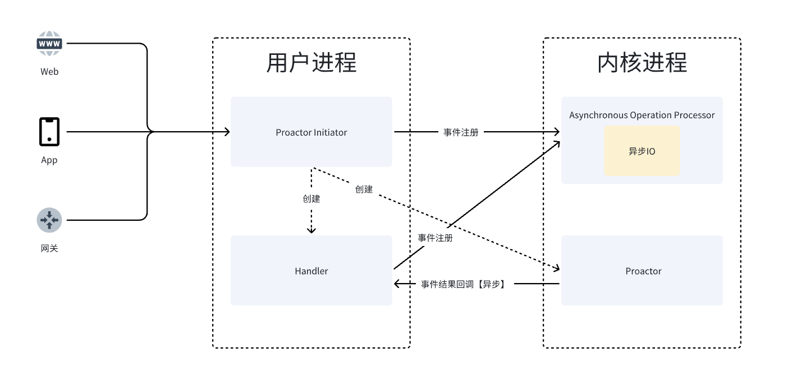
总结
本文介绍了IO的基础概念、基础模式、高性能模式三大板块。
其中基础模式中，我们将空间明确区分为了内核空间、用户空间。当应用层发起IO调用后，操作系统需要处理数据准备、数据就绪、数据复制三个阶段的工作。 从图例中，可以清晰地判断何为同步、异步，何为阻塞、非阻塞。
弄清楚基本概念与基础模式后，我们过了一遍主流中间件使用的高性能架构模式。其中Reactor模式最为重点，请重点关注。
每一个架构模式的设计均是为了解决上一个模式的缺点。
而解决问题的思路是相似的：
- 资源预处理；
- 非阻塞IO（NIO）；
- 资源池化；
- IO多路复用；
- 异步化（AIO）；
学习、运用本文相关知识，我觉得两点最为关键：
- 梳理过程要清晰，配合图例、流程图、文字可以更好地理解一块领域的知识；
- 解决问题的思路一般不需要重新发明，因此要了解业界、经典著作中的已有方案与解决问题的过程；
以上。